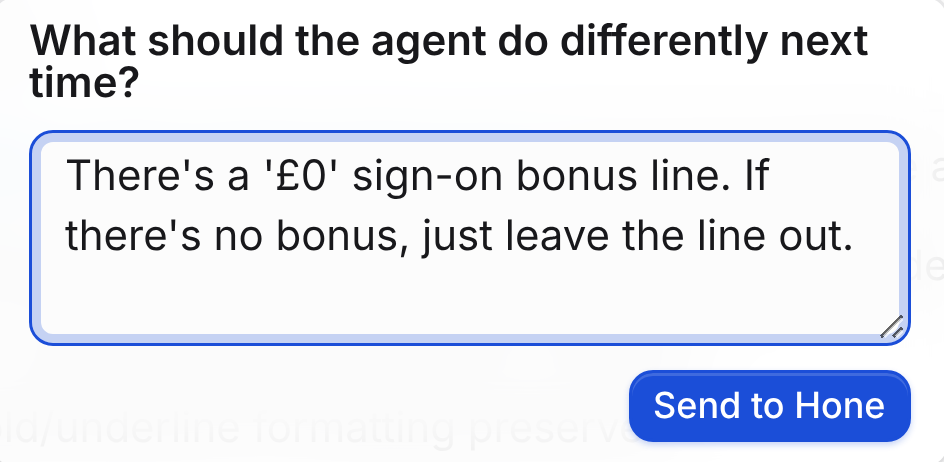
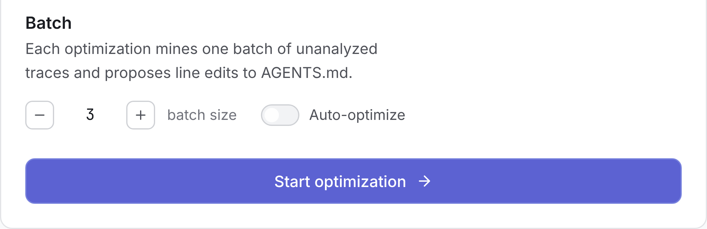
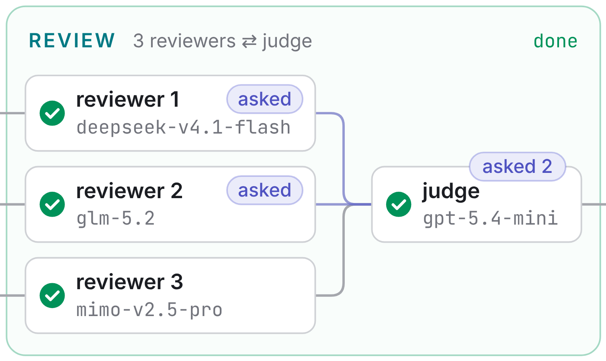
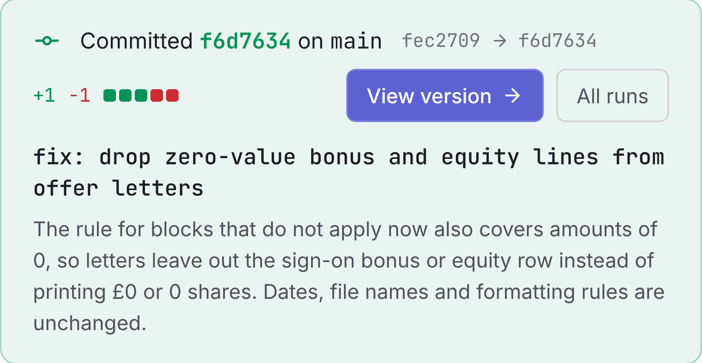
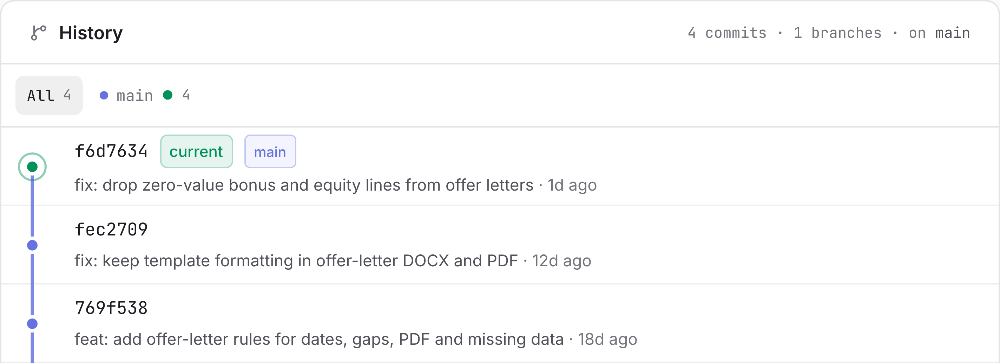

DEMO TRACK IEEE International Conference on Data Mining
Institution logo <placeholder>
Institution logo <placeholder>
Hone · Mining Agent Trajectories to Optimize AGENTS.md via Cross-Examination
Alexey Lapin1 · Nikolay O. Nikitin21<placeholder affiliation> 2<placeholder affiliation> · <placeholder email>
Code
github.com/ AaLexUser/hone
Hone improves AGENTS.md from sessions that already happened.
It never re-runs a task.
AGENTS.md is the instruction file a coding agent loads into its system prompt at every session.
Highest task success of six systems on both benchmarks. Gain over the same Pi agent without Hone
OfficeQA
+3.0pts
Hone59.7
Pi agent56.7
Codex CLI54.9
SkillOpt50.6
EvoSkill41.5
Trace2Skill20.9
SpreadsheetBench
+11.3pts
+1.9 over SkillOpt
Hone82.3
Pi agent71.0
Codex CLI72.3
SkillOpt80.4
EvoSkill65.3
Trace2Skill40.7
Table I. Task success, %, GPT-5.4-mini target model. Hone unoptimized agent skill optimizer (re-runs tasks with a verifier). The Pi agent is Hone's starting configuration, and only AGENTS.md differs.
Setup. Hone saw only traces and per-task feedback ("Expected ... Got ...") and re-ran no task to score an edit. OfficeQA used 200 tasks in 5 batches of 40, and each final file ran once.
Reviewers disagree, a judge cross-examines, a verifier gates every edit.
1Trace collection. Sessions arrive as traces with optional user feedback.
2Batch assembly. Unanalyzed traces form a frozen batch, fixed for the whole run.
3Review. Reviewers on different models analyze the batch, and the judge cross-examines them.
4Propose. Proposers read the report and past decisions, and the judge fuses one edit set.
5Verify and commit. Anchors match once and cite the batch. If not, only propose re-runs.
Mining happens in two places. The review panel extracts recurrent behavioral patterns from the traces, and the judge synthesizes these analyses into edit decisions. A hypothesis survives only when it is recurrent in the data and holds up under cross-examination.
Use your agent as usual. Hone edits its AGENTS.md between sessions.

1You comment on a reply in the agent's chat

2Traces fill a batch, and you start a run or turn on auto-optimize

3The judge cross-examines the reviewers, then the proposers

4Hone commits verified edits with the judge's message

5Every version stays in Git, and the agent fetches the current one